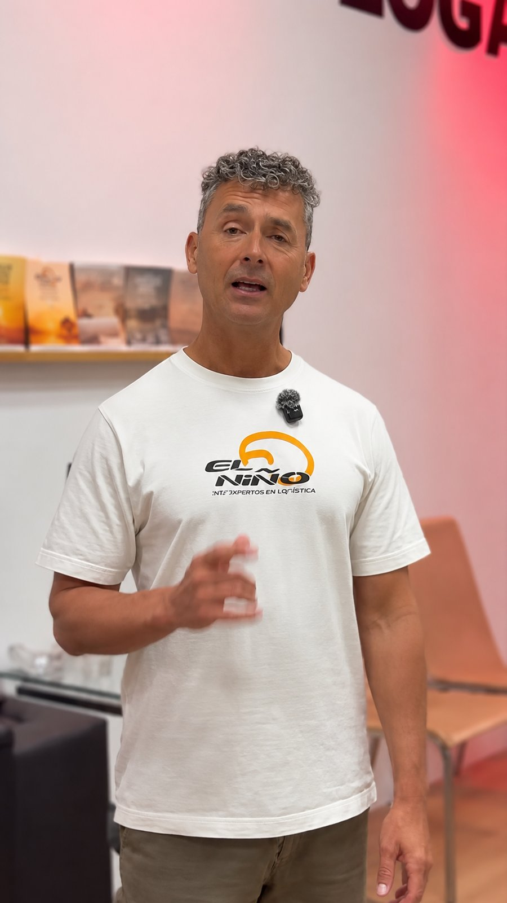
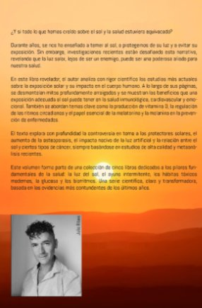
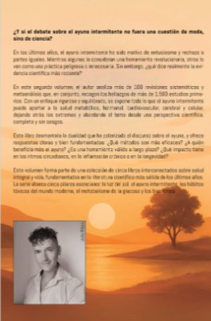
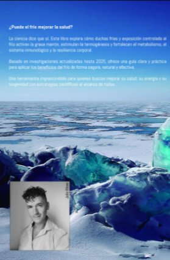
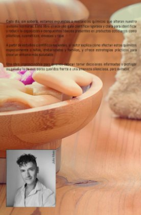
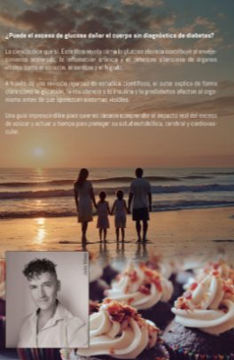
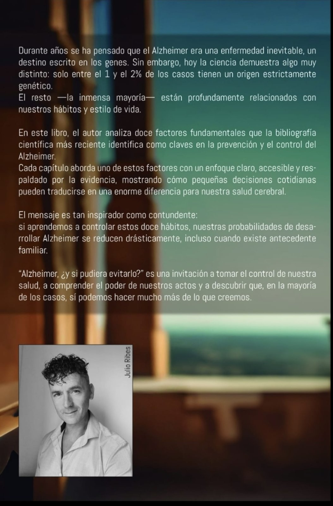
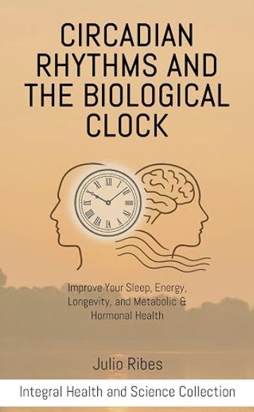
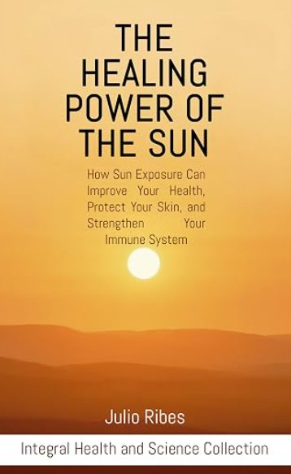
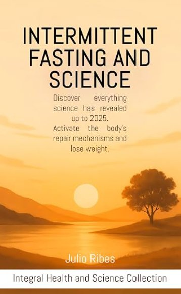

Los libros de Julio Ribes
Una colección de doce títulos para profundizar en una visión integral de la salud, con rigor y cercanía.

Escribir para comprender la salud
La escritura es otra forma de la divulgación de Julio: reunir en libros una mirada que conecta el cuerpo, el movimiento, los hábitos y la ciencia. La colección Salud Integral y Ciencia recoge esa visión para quienes quieren profundizar.
Salud Integral y Ciencia
Doce libros: ocho en español dentro de la colección Salud Integral y Ciencia y cuatro en inglés dentro de Integral Health and Science.
-

Gafas Rojas: La Solución Circadiana
Una guía sobre el uso de gafas rojas para reducir la exposición nocturna a luz azul y verde, cuidar la melatonina y favorecer la sincronización del reloj biológico.
-

Los ritmos circadianos y el reloj biológico
Una introducción al reloj biológico y a cómo la luz, la oscuridad y los hábitos diarios influyen en el sueño, la energía y la salud.
-


El poder curativo del sol
Una mirada al papel de la luz solar en el reloj biológico, el estado de ánimo y la vitalidad, con pautas para aprovecharla de forma segura.
-


Ayuno intermitente y ciencia
Una explicación de las bases del ayuno intermitente, su relación con los ritmos circadianos y formas prudentes de adaptarlo a cada persona.
-

Termogénesis: El poder del frío
Una introducción a la termogénesis y a cómo incorporar la exposición al frío de forma gradual y segura en la rutina diaria.
-

Basta de tóxicos en el hogar: Proteja a su familia
Identifica sustancias y productos habituales del hogar que pueden afectar la salud y propone medidas prácticas para reducir su presencia.
-


Cuando la glucosa alta mata
Explica cómo se regula la glucosa, qué factores alteran sus niveles y qué hábitos pueden ayudar a mantenerlos estables.
-


Alzheimer, ¿y si pudiera evitarlo?
Explora factores de estilo de vida relacionados con la salud cerebral —descanso, alimentación y movimiento— desde una perspectiva de prevención.
-

Circadian Rhythms and the Biological Clock
An introduction to the biological clock and how light, darkness and daily habits shape sleep, energy and health.
-

When High Glucose Kills
How glucose is regulated, what disrupts it and which habits help keep it stable.
-

The Healing Power of the Sun
The role of sunlight in the biological clock, mood and vitality, with guidelines for safe exposure.
-

Intermittent Fasting and Science
The foundations of intermittent fasting, its link to circadian rhythms and sensible ways to adapt it to each person.
Sobre los libros de Julio Ribes
¿Cuántos libros ha escrito Julio Ribes?
Doce: ocho en español dentro de la colección Salud Integral y Ciencia y cuatro en inglés dentro de Integral Health and Science.
¿Dónde comprar los libros?
Todos los títulos están disponibles en Amazon, en la página de autor de Julio Ribes.
¿En qué orden leerlos?
No hay un orden obligatorio: cada título aborda un aspecto concreto de la salud. Una buena puerta de entrada es «Los ritmos circadianos y el reloj biológico».
¿Hay versión Kindle?
Sí, los libros están disponibles en formato digital Kindle además de en papel.
Descubre todos los títulos
Visita la página de autor de Julio Ribes en Amazon para ver la colección completa.